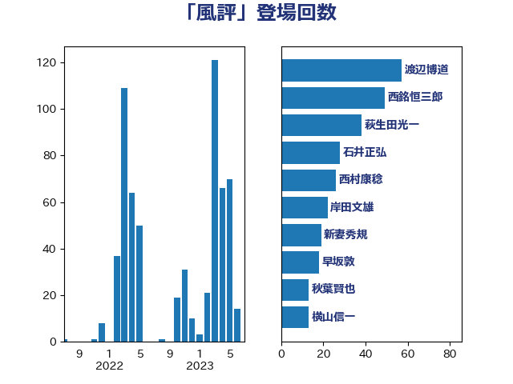

単語「風評」

| 渡辺博道 | 自由民主党 | 57 回 |
| 西銘恒三郎 | 自由民主党 | 49 回 |
| 萩生田光一 | 自由民主党 | 38 回 |
| 石井正弘 | 自由民主党 | 28 回 |
| 西村康稔 | 自由民主党 | 26 回 |
| 岸田文雄 | 自由民主党 | 22 回 |
| 新妻秀規 | 公明党 | 19 回 |
| 早坂敦 | 日本維新の会 | 18 回 |
| 秋葉賢也 | 自由民主党 | 13 回 |
| 横山信一 | 公明党 | 13 回 |
| 梅村みずほ | 日本維新の会 | 13 回 |
| 金子恵美 | 立憲民主党 | 12 回 |
| 野村哲郎 | 自由民主党 | 12 回 |
| 太田房江 | 自由民主党 | 11 回 |
| 上杉謙太郎 | 自由民主党 | 8 回 |
| 西村明宏 | 自由民主党 | 7 回 |
| 末松信介 | 自由民主党 | 7 回 |
| 庄子賢一 | 公明党 | 7 回 |
| 里見隆治 | 公明党 | 6 回 |
| 菅家一郎 | 自由民主党 | 6 回 |
| 吉田とも代 | 日本維新の会 | 6 回 |
| 河西宏一 | 公明党 | 5 回 |
| 上月良祐 | 自由民主党 | 5 回 |
| 青島健太 | 日本維新の会 | 4 回 |
| 鈴木敦 | 国民民主党 | 4 回 |
| 山口壯 | 自由民主党 | 4 回 |
| 足立康史 | 日本維新の会 | 3 回 |
| 竹谷とし子 | 公明党 | 3 回 |
| 福島伸享 | 無所属 | 3 回 |
| 玄葉光一郎 | 立憲民主党 | 3 回 |
| 小林茂樹 | 自由民主党 | 3 回 |
| 小島敏文 | 自由民主党 | 3 回 |
| 中谷真一 | 自由民主党 | 3 回 |
| 鬼木誠 | 立憲民主党 | 2 回 |
| 鎌田さゆり | 立憲民主党 | 2 回 |
| 進藤金日子 | 自由民主党 | 2 回 |
| 若松謙維 | 公明党 | 2 回 |
| 石川昭政 | 自由民主党 | 2 回 |
| 石垣のりこ | 立憲民主党 | 2 回 |
| 牧義夫 | 立憲民主党 | 2 回 |
| 池畑浩太朗 | 日本維新の会 | 2 回 |
| 江島潔 | 自由民主党 | 2 回 |
| 松野明美 | 日本維新の会 | 2 回 |
| 松村祥史 | 自由民主党 | 2 回 |
| 岸真紀子 | 立憲民主党 | 2 回 |
| 安江伸夫 | 公明党 | 2 回 |
| 塩田博昭 | 公明党 | 2 回 |
| 和田政宗 | 自由民主党 | 2 回 |
| 馬場雄基 | 立憲民主党 | 1 回 |
| 長島昭久 | 自由民主党 | 1 回 |
| 鈴木俊一 | 自由民主党 | 1 回 |
| 野間健 | 立憲民主党 | 1 回 |
| 近藤和也 | 立憲民主党 | 1 回 |
| 谷公一 | 自由民主党 | 1 回 |
| 荒井優 | 立憲民主党 | 1 回 |
| 簗和生 | 自由民主党 | 1 回 |
| 竹詰仁 | 国民民主党 | 1 回 |
| 穂坂泰 | 自由民主党 | 1 回 |
| 石川博崇 | 公明党 | 1 回 |
| 田名部匡代 | 立憲民主党 | 1 回 |
| 田中健 | 国民民主党 | 1 回 |
| 浅野哲 | 国民民主党 | 1 回 |
| 柳ヶ瀬裕文 | 日本維新の会 | 1 回 |
| 末次精一 | 立憲民主党 | 1 回 |
| 早稲田ゆき | 立憲民主党 | 1 回 |
| 徳永エリ | 立憲民主党 | 1 回 |
| 川田龍平 | 立憲民主党 | 1 回 |
| 岩渕友 | 日本共産党 | 1 回 |
| 岡本あき子 | 立憲民主党 | 1 回 |
| 山本太郎 | れいわ新選組 | 1 回 |
| 宮本徹 | 日本共産党 | 1 回 |
| 宮本岳志 | 日本共産党 | 1 回 |
| 国光あやの | 自由民主党 | 1 回 |
| 嘉田由紀子 | 無所属 | 1 回 |
| 勝部賢志 | 立憲民主党 | 1 回 |
| 冨樫博之 | 自由民主党 | 1 回 |
| 倉林明子 | 日本共産党 | 1 回 |
| 佐藤正久 | 自由民主党 | 1 回 |
| 伊藤忠彦 | 自由民主党 | 1 回 |
| 中野英幸 | 自由民主党 | 1 回 |
| 中野洋昌 | 公明党 | 1 回 |